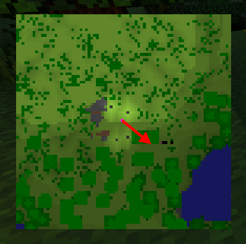
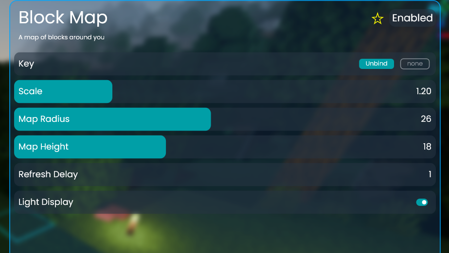

I just tried this out again before writing this, and wow I forgot how cool this was.
This was my first scripting mod, from March 15, 2022 (Minimap v1 wasn't made by me).
It works by scanning a radius around the player, getting a simple colour for each block then:
This project was simultaneously super optimized, not optimized as much as it could be, and not optimized enough. In other words, FPS bad.
 